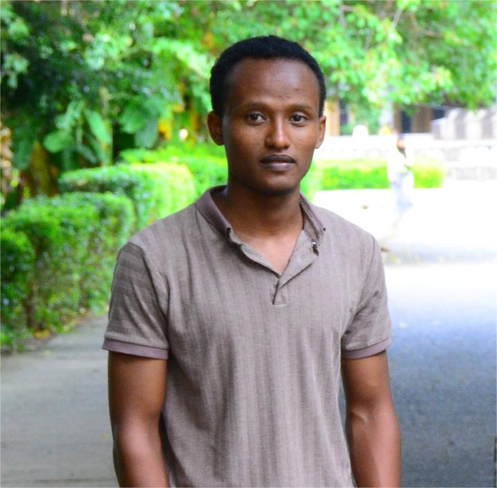

Hello — I'm Hunduma Aboma
I build modern and responsive user interfaces as a frontend developer. I focus on creating clean designs, smooth interactions, and accessible layouts using HTML, CSS, and JavaScript. I enjoy turning ideas and designs into interactive web experiences that are easy to use and visually engaging. I pay attention to details such as responsiveness, performance, and usability to ensure a high-quality user experience. I am passionate about learning new frontend technologies and continuously improving my skills through hands-on projects and practice.
Selected projects
Small selection of recent work and experiments.
About
I enjoy building performant and accessible web apps. I care about clarity, maintainability, and delightful interactions. I build modern and responsive user interfaces as a frontend developer. I focus on creating clean designs, smooth interactions, and accessible layouts using HTML, CSS, and JavaScript. I enjoy turning ideas and designs into interactive web experiences that are easy to use and visually engaging. I pay attention to details such as responsiveness, performance, and usability to ensure a high-quality user experience. I am passionate about learning new frontend technologies and continuously improving my skills through hands-on projects and practice.
- HTML & ARIA
- CSS (Flexbox / Grid)
- PHP JS
- React & tooling
Contact
If you'd like to work together, send me a message — or use the mailto link below.